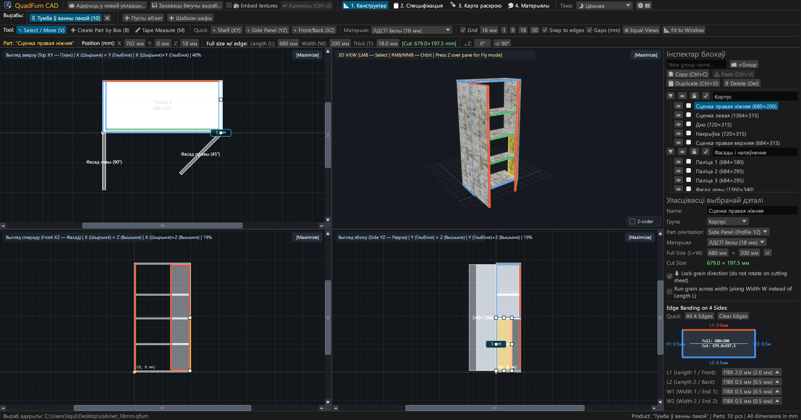
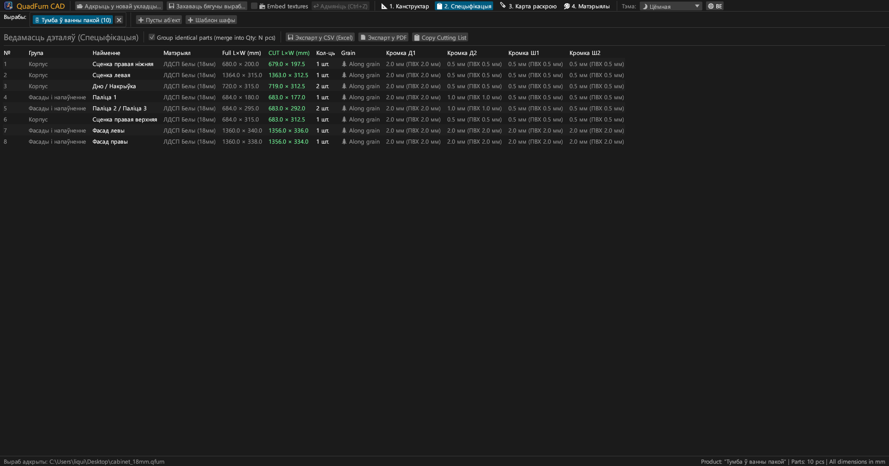
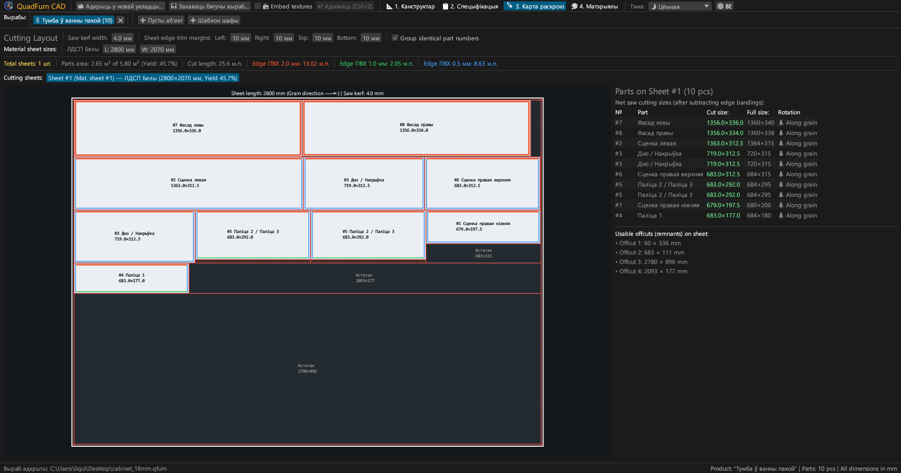
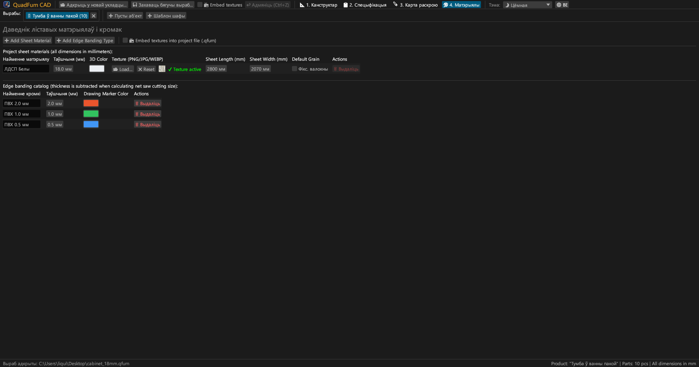
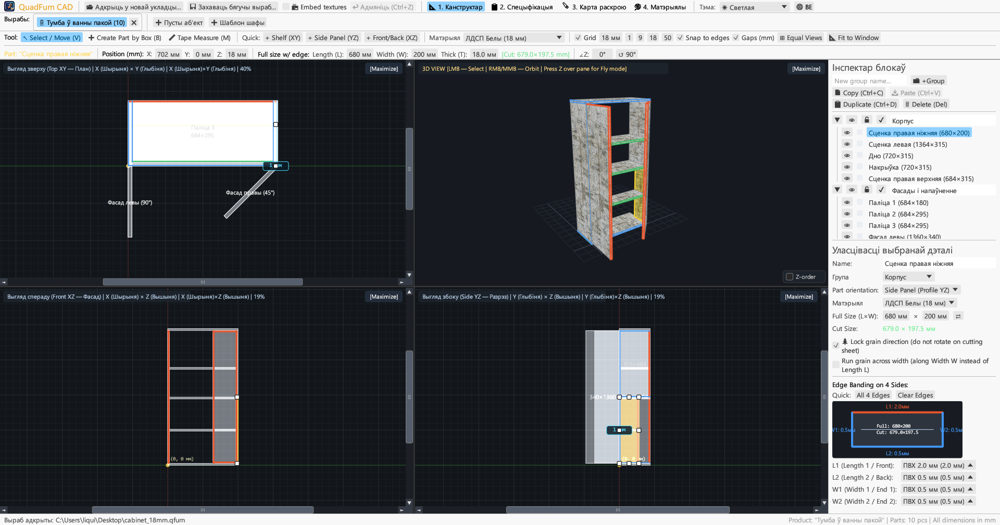
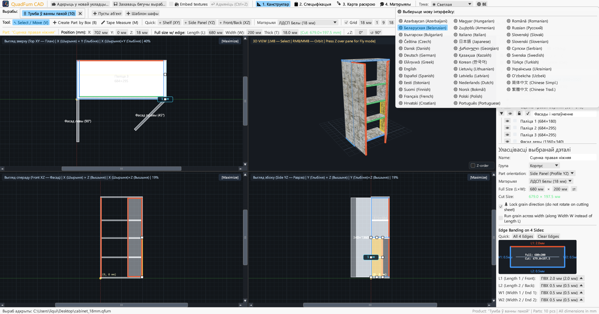

Хуткі CAD для мэбельшчыкаў. Сінхроннае 4-відавое мадэляванне, аўтаматычны вылік кромкі і раскрой пліт — даступны анлайн у браўзеры і на камп'ютары.

Аб'ядноўвае чарчэнне ў 4 праекцыях, дакладнае лікавае пазіцыянаванне і аптымізацыю карт раскрою ў адзінай праграме.
Адначасовая праца ў трох артаганальных праекцыях (Зверху XY, Спераду XZ, Збоку YZ) са скролбарамі, магнітнай прывязкай і інтэрактыўным 3D-акном.
Імгненны ўвод лікавых каардынат (X, Y, Z), габарытаў (Д × Ш × Т) і вугла (∠Z) з убудаваным калькулятарам арыфметыкі прама ў полі.
Прызначэнне кромкі ПВХ/АБС (0.4–2.0 мм) на любы з 4 бакоў з імгненным разлікам дакладных пілільных памераў для станка.
Хуткі рухавік раскрою з улікам кірунку валокнаў дрэва, шырыні прапілу пілы, адступаў абрэзкі краёў ліста і дзелавых рэшткаў.
Праца з некалькімі праектамі адначасова ва ўкладках. Капіраванне і ўстаўка дэталей паміж вырабамі з аўтаматычным пераносам матэрыялаў і кромак.
Экспарт гатовага да друку альбома A4 Альбомная: спецыфікацыя, чарцяжы 4 праекцый, карты раскрою і ведамасць расходу матэрыялаў з запасам +15%.





Цалкам аўтаномныя бінарныя файлы без знешніх залежнасцей.
Партатыўны выканальны файл з іконкай, не патрабуе ўстаноўкі.
sudo apt install ./quadfurn_0.2.5_amd64.deb
Універсальны бандл QuadFurn.app для Apple Silicon (M1–M4) і Intel x86_64.
| Клавіша | Дзеянне | Вобласць |
|---|---|---|
| V | Інструмент Выбар / Зрух (перамяшчэнне, 8 маркераў памеру, рамка вылучэння) | 2D-праекцыі |
| B | Стварыць дэталь рамкай (расцягванне прамавугольніка ў бягучай плоскасці) | 2D-праекцыі |
| M | Лінейка (замер дакладных адлегласцей ΔX, ΔY, L у міліметрах) | 2D-праекцыі |
| Z | Рэжым палёту ад першай асобы (Noclip з кіраваннем WASD + мышшу) | 3D-акно |
| ← → ↑ ↓ | Зрух выбраных дэталей на крок сеткі (Shift — двайны крок) | 2D-праекцыі |
| Ctrl + C / V | Капіраваць / уставіць выбраныя дэталі (працуе паміж укладкамі вырабаў) | Усе ўкладкі |
| Ctrl + D | Дубліраваць выбраныя дэталі са зрухам | Актыўны праект |
| Ctrl + S | Захаваць выраб у файл .qfurn / .json | Актыўны праект |
| Ctrl + Z | Адмяніць апошняе дзеянне (да 40 крокаў гісторыі) | Актыўны праект |
| Delete / Backspace | Выдаліць выбраныя дэталі | Актыўны праект |